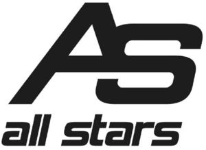

Trade Mark Journal No.2025/018 2 May 2025
WO0000001850431 (35,41,44)
Office of origin: Germany
Date of International Registration:17 January 2025
Date of designation in the UK:
17 January 2025

International priority date claimed: 18 July 2024
(Germany)
- Class 35
- Retail services in relation to syrups for making beverages; retail services in relation to preparations for making non-alcoholic beverages; retail services in relation to concentrates for use in the preparation of sports drinks; retail services in relation to sports drinks; retail services in relation to energy drinks [not for medical purposes]; retail services in relation to non-alcoholic beverages; retail services in relation to fruit juice beverages; retail services in relation to chocolate-based beverages; retail services in relation to preparations for making chocolate-based beverages; retail services in relation to cocoa-based beverages; retail services in relation to coffee-based beverages; retail services in relation to glucose; retail services in relation to starch derivatives for food human consumption; retail services in relation to starch for food; retail services in relation to food preparations based on grains; retail services in relation to modified starches for food [not medical]; retail services in relation to malt extract for food; retail services in relation to foodstuffs made from cereals; retail services in relation to cereal based foodstuffs for human consumption; retail services in relation to vitamin preparations; retail services in relation to vitamins and vitamin preparations; retail services in relation to nutritional supplement food bars; retail services in relation to protein powder dietary supplements; retail services in relation to dietary supplements consisting of vitamins; retail services in relation to nutritional supplement meal replacement bars for boosting energy; retail services in relation to albuminous foodstuffs for medical purposes; retail services in relation to mineral dietary supplements; retail services in relation to albuminous preparations for medical purposes; retail services in relation to food supplements; retail services in relation to fitness and endurance supplements; retail services in relation to dietetic preparations and dietary supplements; online retail services in relation to syrups for making beverages; online retail services in relation to preparations for making non-alcoholic beverages; online retail services in relation to concentrates for use in the preparation of sports drinks; online retail services in relation to sports drinks; online retail services in relation to energy drinks [not for medical purposes]; online retail services in relation to non-alcoholic beverages; online retail services in relation to fruit juice beverages; online retail services in relation to chocolate-based beverages; online retail services in relation to preparations for making chocolate-based beverages; online retail services in relation to cocoa-based beverages; online retail services in relation to coffee-based beverages; online retail services in relation to glucose; online retail services in relation to starch derivatives for food human consumption; online retail services in relation to starch for food; online retail services in relation to food preparations based on grains; online retail services in relation to modified starches for food [not medical]; online retail services in relation to malt extract for food; online retail services in relation to foodstuffs made from cereals; online retail services in relation to cereal based foodstuffs for human consumption; online retail services in relation to vitamin preparations; online retail services in relation to vitamins und vitamin preparations; online retail services in relation to nutritional supplement food bars; online retail services in relation to protein powder dietary supplements; online retail services in relation to dietary supplements consisting of vitamins; online retail services in relation to nutritional supplement meal replacement bars for boosting energy; online retail services in relation to albuminous foodstuffs for medical purposes; online retail services in relation to mineral dietary supplements; online retail services in relation to albuminous preparations for medical purposes; online retail services in relation to food supplements; online retail services in relation to fitness and endurance supplements; online retail services in relation to dietetic preparations and dietary supplements; wholesale services in relation to nutritional supplements.
- Class 41
- Sports and fitness services; consultancy relating to physical fitness training; physical fitness consultation; providing sports facilities; coaching services for sporting activities; operation of physical fitness centres; advisory services relating to the organisation of sporting events; operating of martial arts' schools; provision of keep fit facilities; providing facilities for sports recreation; providing sports training facilities; coaching; personal trainer services; gymnasium services relating to weight training; personal trainer services [fitness training]; physical fitness assessment services for training purposes; provision and management of sporting events; instruction courses relating to physical fitness; provision of educational services relating to exercise; conducting fitness classes; provision of educational services relating to fitness; instruction in weight training; exercise [fitness] training services; strength and conditioning training; arranging and conducting of sports events; arranging and conducting youth sports programs; organization, arranging and conducting of sports competitions; organising of sporting activities and of sporting competitions; management of events for sporting clubs; providing instruction and equipment in the field of physical exercise; providing fitness and exercise facilities; virtual physical fitness training services; provision of information relating to physical exercises via an online web site; organisation of bodybuilding competitions; gymnasium services relating to body building; provision of information relating to training; keep fit instruction services; training services relating to fitness; exercise [fitness] advisory services; physical fitness instruction for adults and children; arranging of workshops and seminars; arranging and conducting of workshops [training].
- Class 44
- Dietetic advisory services; sports medicine services; development of individual physical rehabilitation programmes; physical rehabilitation.
Friedrich Michael Hegemann
Representative: Dr. Schön, Neymeyr & Partner Patentanwälte mbB, Bavariaring 26, 80336 München, GERMANY